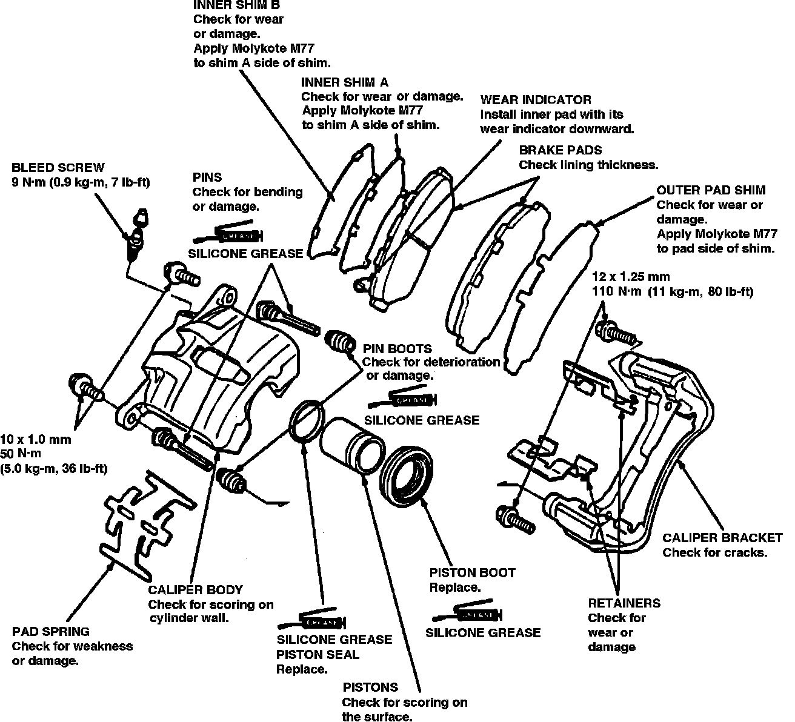

Removal and Disassembly
Removal & DisassemblyFig. 3 Exploded View Of Front Disc Brake Assembly:

1. Raise and support front of vehicle and remove wheels.
2. Remove banjo bolt and disconnect brake line from caliper. Secure hose in raised position to prevent leakage.
3. Remove caliper pin bolt and the caliper, Fig. 3.
4. Remove pad spring from caliper.
5. Position a block of wood or shop rag in caliper opposite piston, then carefully remove piston by applying compressed air into fluid inlet port. Use only as much air pressure as is needed to remove piston.
6. Remove piston boot and seal.